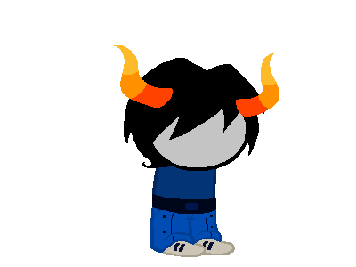
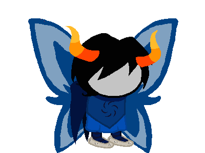

Void
Void is associated with "the essence of lacking, or nothingness" and "the obfuscation of knowledge", or its "outright destruction". Calliope suggests that the Void aspect may be the opposite of the Light aspect here. She mentions that Void players have the ability to stay hidden, and mentions that Rose, a Light player, has the opposite effect.
It seems to enable players to act without being seen or noticed, as evidenced by Darkleer's apparent ability to hide a Magic Cue Ball from Doc Scratch, Equius's similar talents during Vriska's struggles with Doc Scratch, and Roxy's occasional "dark patches" from Calliope's viewpoint. Void players may potentially also have the ability to become invisible in some sense, as it is seen that the B2 Draconian Dignitary becomes invisible with the Ring of Void as well as Roxy reportedly becoming both invisible and intangible while wearing it, and then becomes able to do so by herself later. Normally a ring of Orbs does not work on humans, but Roxy thinks the ring is helping her to get in touch with her own Void powers. It is also interesting to note that two of the known Heroes of Void have both used the Fistkind Strife Specibus. The use of bare hands is essentially the lack of a weapon, playing into the theme of Void being the essence of nothing. It is also worth noting that the Void symbol is the inverse of the Space symbol; corresponding to the spots between the arms on the Space symbol.
All known Void players have created a "void" around themselves to distance themselves from the world; Roxy and her drinking, Horuss and his "happiness" and Equius and the hemospectrum.
The Void aspect may be related to the Furthest Ring, which has been referred to as "the void". This is further underlined by Roxy's affinity to the Furthest Ring and Rose causing the blackout under the influence of the gods of the Furthest Ring.
As the Rogue of Void, Roxy is able to "steal" the nothingness from the idea of an object, and thus either conjures the actual object or creates them from scratch. Either way, she has somehow succeeded conjuring up Perfectly Generic Objects, pumpkins, a combination of a Generic Object and a Matriorb, and a Matriorb itself.
It may also be worth noting that Equius's blood is used by Gamzee to void out information on Lord English and himself in the copy of Rose's book possessed by Calliope. Horuss also stated that he used his Void abilities to draw out qualities in himself he did not know he had.
Known Heroes of Void are Roxy Lalonde, the Rogue of Void; Equius Zahhak, the Heir of Void; and Horuss Zahhak, the Page of Void. Roxy's denizen is Nix (Nix is the Dutch pronunciation of the word nothing, further going with the theme), and it is unknown who Equius and Horuss's denizens are. All known Heroes of Void have been Derse dreamers.
Knight
Currently Empty
Seer
Currently Empty
Bard
Currently Empty
Heir
Currently Empty
Maid
Currently Empty
Rogue
Currently Empty
Page
Currently Empty
Thief
Currently Empty
Sylph
Currently Empty
Prince
Currently Empty
Witch
Merkat
 b=%00%00%00%C2%B8%C3%B7%C3%9B%10U%0D%0D%04&s=,,Molecular Gastronomy,Psychology,bendingNothingness
Chat Handle:N/A
Land:N/A
Planet:N/A
Specibus:N/A
Modus:N/A
Matesprit:N/A
Kismisis:N/A
Morail:N/A
Auspistice:N/A
Dancestor:N/A
Intrest1:N/A
Intrest2:N/A
Symbol:
Mage
Currently Empty
Waste
Currently Empty
Scout
Currently Empty
Scribe
Currently Empty
Sage
Currently Empty
Guide
Currently Empty
Grace
Currently Empty
Muse
Currently Empty
Lord
Currently Empty